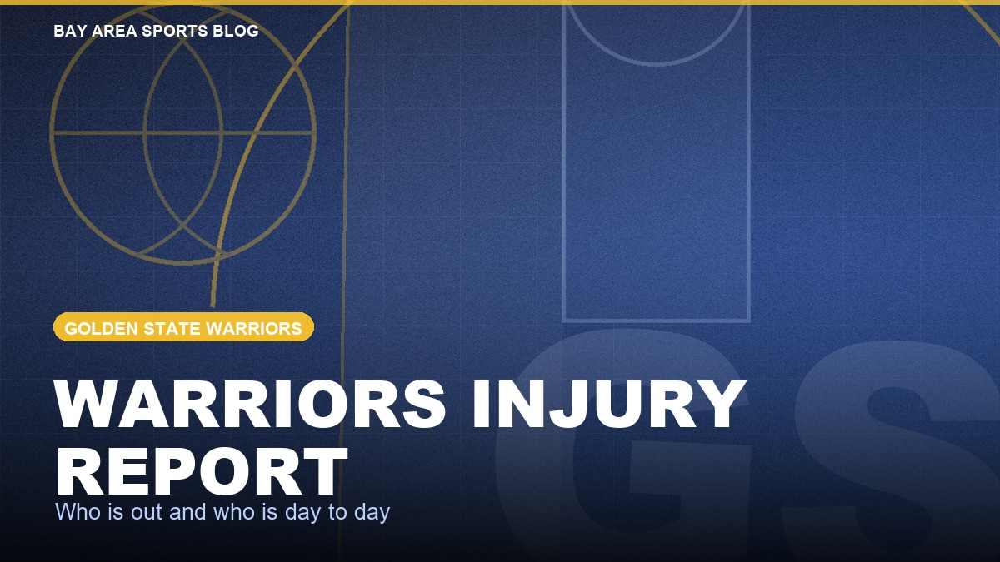

Warriors Injury Report
Who is out and who is day to day for Golden State, kept current through the season at this one address.

Check this page before a Warriors game. Every player on the league injury report is here with his position, the injury, his status and when it last changed. It refreshes several times a day, so the link never changes from one week to the next.
The current report
Updated Fri, Oct 2, 4:03 PM Pacific. 2 ruled out, 2 day to day or questionable. Next game: at LA Clippers, Sun, Oct 4, 4:00 PM Pacific.
| Player | Pos | Injury | Status | Last update |
|---|---|---|---|---|
| Jimmy Butler III | F | Knee, surgery, right | Out | Fri, Oct 2 |
| Moses Moody | G | Knee, surgery, left | Out | Mon, Sep 28 |
| Player | Pos | Injury | Status | Last update |
|---|---|---|---|---|
| Kristaps Porzingis | C | Undisclosed | Day to day | Mon, Sep 28 |
| Alex Toohey | F | Knee, surgery, left | Day to day | Wed, Sep 9 |
How to read it
Out means he will not play in the next game. Day to day means the injury is minor enough that the call gets made close to tip off, and on game day the league report turns that into questionable, doubtful or probable. The NBA has no injured reserve, so a long injury simply stays on the report as out.
You will not find return dates here unless the team has announced one. Estimated timelines are guesses, and we do not print guesses as news. The same goes for practice participation: if the feed does not report it, we do not make it up.
Where the numbers come from
Status and injury come from the league injury report as published through ESPN, read automatically. Nothing in the tables is typed in by hand. See our editorial standards and corrections policy.
For who plays when somebody sits, see the Warriors depth chart and our projected rotation. Every game and result is on the Warriors schedule page, and the long view of the roster is in the season outlook.